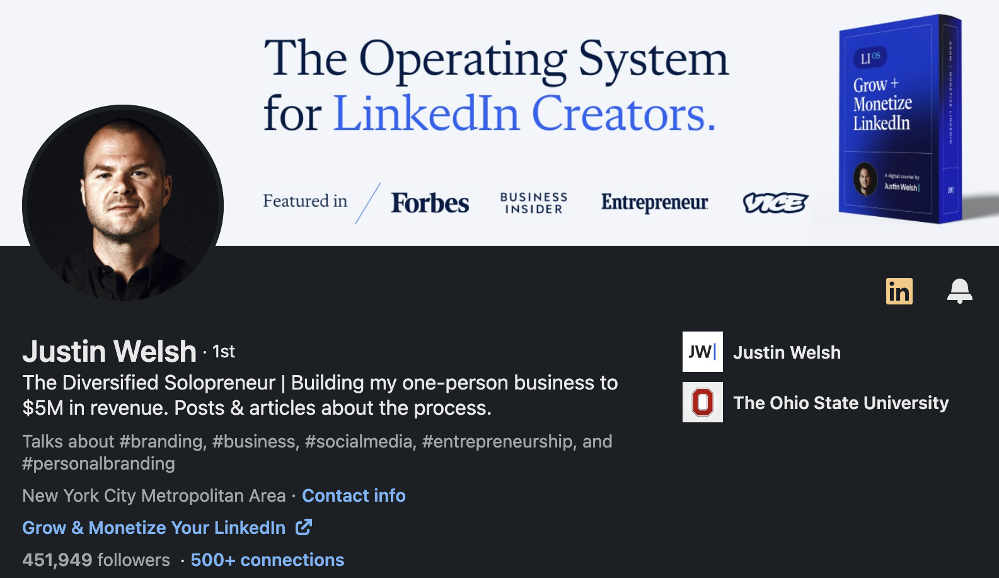
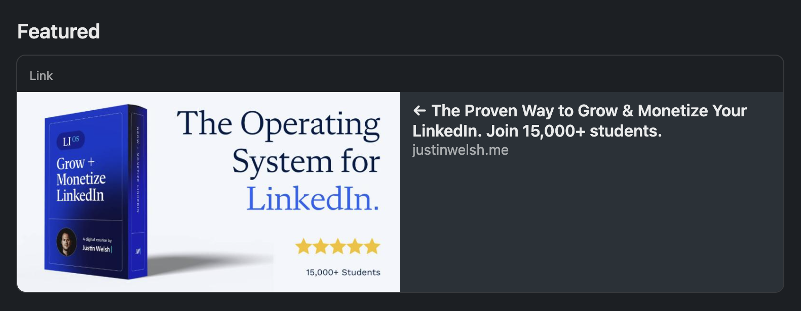
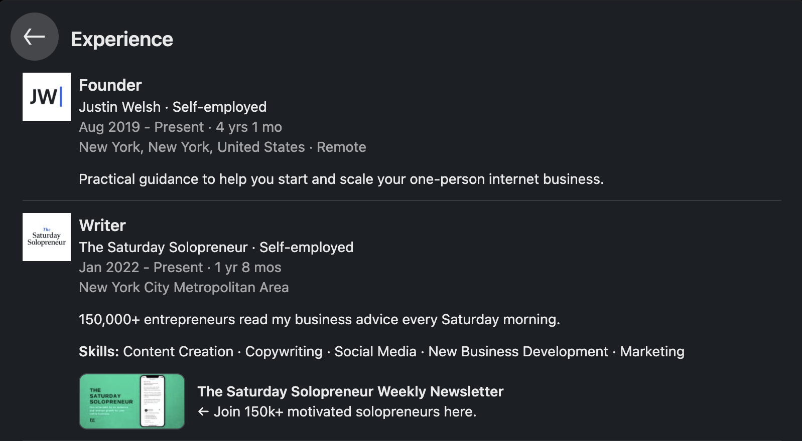
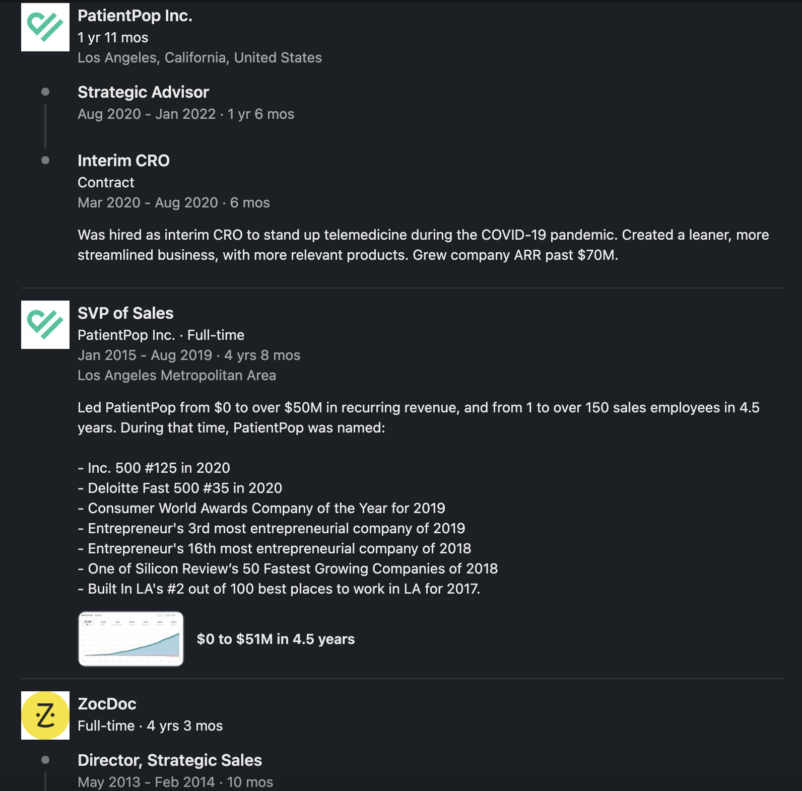
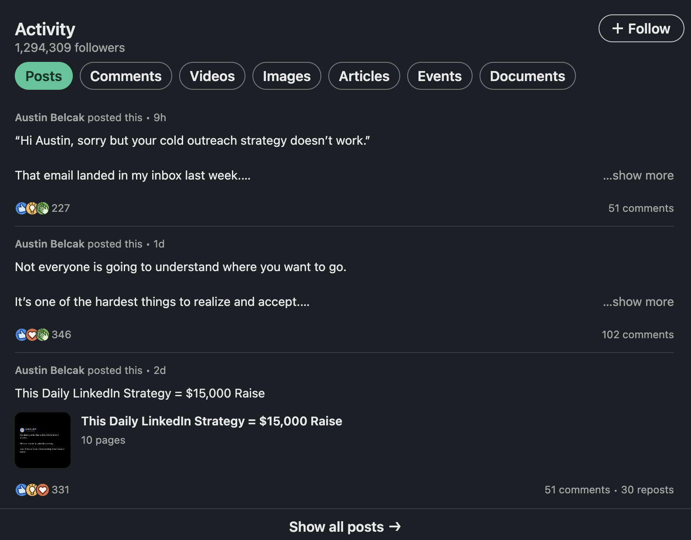
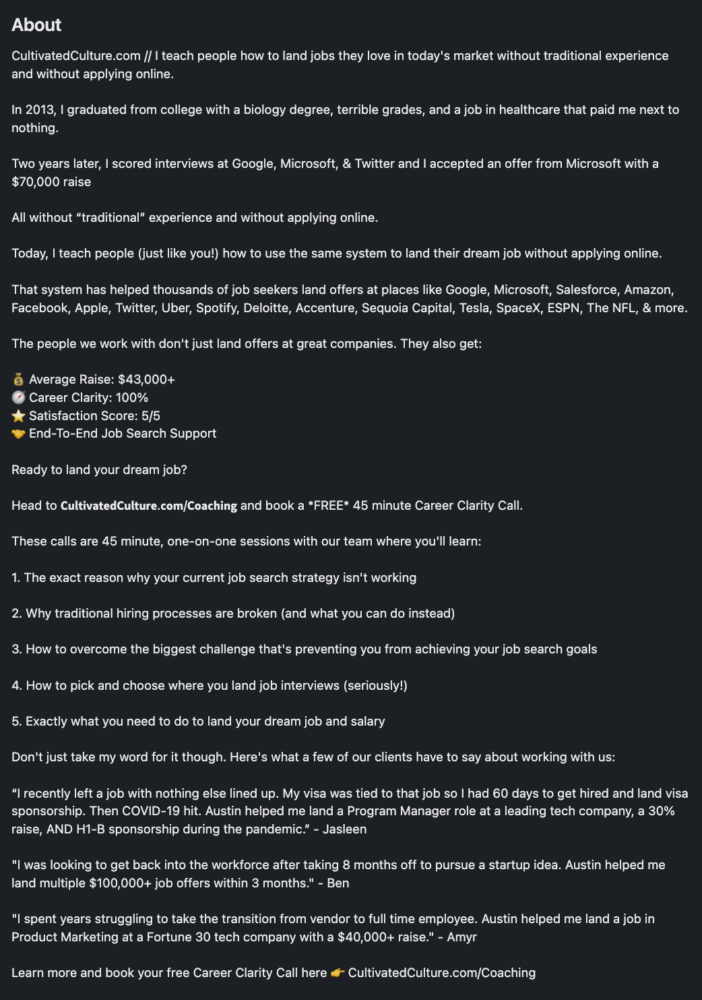
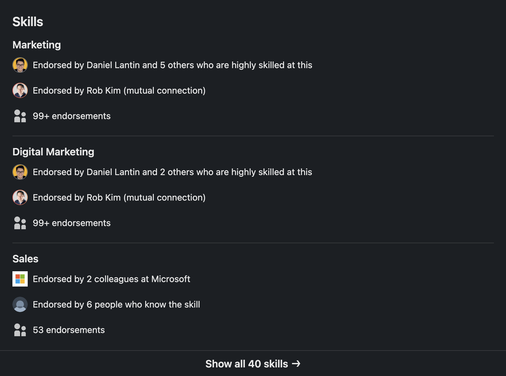
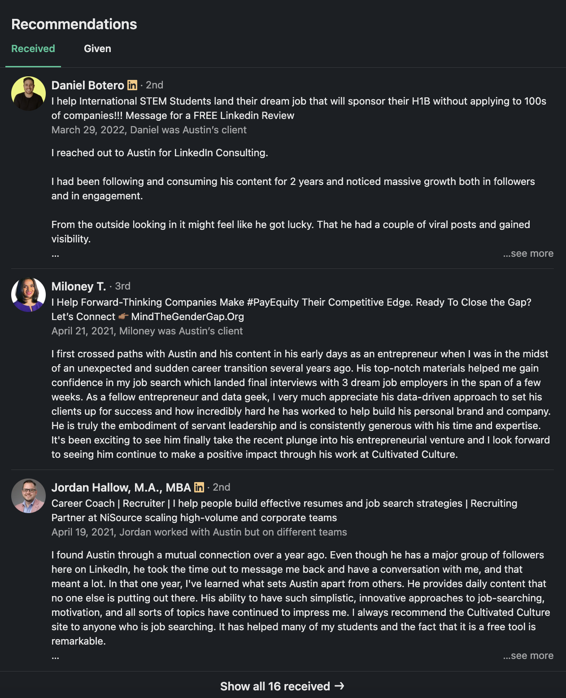

In this digital era, a strong LinkedIn profile is career currency. Yet, while everyone is "on" the platform, not everyone knows how to make a good LinkedIn profile.
After optimizing my own to help me generate $4M+ in my solo business and observing countless others, a glaring problem has always stood out:
Most profiles aren't properly optimized, so they don't capture the right kind of attention.
LinkedIn isn't just a fancy online resume anymore. It's a place to showcase your personal brand in a way that resonates and gets you discovered by your target audience.
In this article, I'll unpack my top LinkedIn profile tips that have been game-changers for the thousands of professionals I've mentored. By the end, you'll know how to refine your profile, rise above the noise, and attract ideal clients, recruiters, and key decision-makers.
Turn digital attention into tangible success with LinkedIn
In 2019, after contributing to the immense growth of two companies, I decided to pursue my unique vision. I truly believed that building an online audience was the next big thing — and that with the right LinkedIn marketing strategy, one could turn digital attention into tangible success.
And boy, was I onto something.
From 0 followers, I sprinted to 20K+ in just 6 months. Today, I have 450K+ followers on the platform. The amazing community I built translated into a staggering $4.2M in business revenue at a whopping 94% profit margin. All as a "Diversified Solopreneur."
The secret wasn't just in my business acumen or marketing tactics. It was in the fundamentals of my LinkedIn profile, and how I used it as the backbone of my digital brand.
If I could pivot my entire career around it, imagine what a good Linkedin profile could do for you.
How to optimize your LinkedIn profile
- Use a professional headshot
- Create an on-brand banner
- Optimize your headline
- Make the Featured section your "digital storefront"
- Tell your story in the About section
- Beef up your Experience section
- Publish quality content consistently
- Ask for and include recommendations
Step #1: Use a professional headshot
Let's start with the basics, and something I've seen neglected more times than I can count — your profile picture. It's the first impression you make online.
Now, don't get me wrong. You don't need to dash to the nearest studio for a headshot with a pro photographer. Nor do you need to suit up as if you're stepping into a board meeting.
The face of professionalism has evolved. What's essential today is authenticity and relatability. A high-quality image where you look approachable can work wonders. That genuine demeanor can resonate more than the sharpest suit in your closet.
You're aiming for trust and on-brand representation here.
Ask yourself: Does this photo represent the professional I want to be known as?
If the answer is anything but a resounding 'yes,' then it might be time for a reshoot.
Step #2: Create an on-brand banner
Imagine walking into a room with a gigantic billboard that tells everyone who you are and what you're about. That's the power your LinkedIn banner holds. It's not just some decorative backdrop — it's your personal advertising, grabbing attention the moment someone lands on your profile.
Here's where many tend to miss the mark:
They either neglect this space or clutter it with too much information.
So, let me break down the art of creating a killer banner that reflects your brand:
Design for the space
Not all designs are equal. Ensure that what you've got up there is readable and visually compelling not only on a computer but on mobile, too. Keep in mind that your profile picture is going to eat into that space (on the left side), so you'll want to leave that area open.
Pro tip: Canva is fantastic for adding a touch of professionalism without the hefty design fees.
Keep it simple
Clarity trumps all. What do you do? Who are you as a professional? Who do you serve?
Maybe you're a content strategist for B2B tech companies or a content writer in the finance niche. Whatever it is, spell it out clearly. Think of this as your elevator pitch in visual form.
Instill trust from the get-go
Think about your achievements. Have you collaborated with brands that everyone recognizes? Flaunt them. Your banner is your chance to say, "Hey, I've been trusted by the best in business."
Step #3: Optimize your headline
We live in an age of instant information. People don't want to read paragraphs to understand who you are. They want it in a snapshot — delivered in your headline.
Be clear
What do you do, exactly? A LinkedIn headline shouldn't be just a job title. It's your digital business card and SEO magnet. What you write here can show up on search engines when people type in specific keywords.
So, spell it out — whether you're a digital marketing specialist, graphic designer, freelance writer… you name it.
Include your area of expertise
The more specific you can get, the better.
If you're a freelance writer, are you specializing in finance or health and wellness?
Niches matter. They're not just keywords; they're a statement of your expertise.
Add the spark
If you want to include something unique, let it follow after the critical bits mentioned above.
Let's say you're an automotive content writer and also a race car driver. Your headline could be something like:
"Helping automotive brands boost visibility, establish credibility, and turn prospects into buyers via SEO content | Pro racing driver | BMW Motorsport ambassador."
This addition is relevant to what you do and can help differentiate you from other "automotive content writers."
Test, learn, optimize
Coming up with the perfect headline takes time, so don't be afraid to experiment. LinkedIn is a dynamic platform, so test your headlines and see what brings in profile views.
Step #4: Make your Featured section your "digital storefront"
Have you ever strolled through a mall and been immediately drawn into a store because of an impressive window display? That's first impressions at work.
On LinkedIn, the Featured section is your window display.
I've seen too many profiles where this section is an assortment of top-performing posts. But this isn't the space to flaunt your viral hits. It's prime digital real estate to guide your audience toward meaningful action.
Here's how you can leverage this space effectively:
Make purposeful choices
What do you want your audience to do after viewing your profile?
Sign up for your webinar or email list? Buy your latest course? Book a consultation?
Pinpoint these calls to action and make them your primary focus in this section.
Use on-brand images
Your Featured section shouldn't look like a patchwork quilt. Uniform, on-brand images can make a world of difference (again, Canva can help with this). They reflect professionalism and reinforce your brand at every touchpoint.
Eliminate friction
Here's a pro tip I wish I’d known earlier: Skip the descriptions.
It might feel counterintuitive, but you want to reduce friction when people show interest in what you offer. Without a description, your audience can click on a featured item and engage with it right away. They won't have to click on "view more" to get to the final destination.
TL;DR: Treat your Featured section as you would a storefront in the busiest part of the city. It's not just a display — it's an invitation — drawing people in, compelling them to explore further, and guiding them toward the next step in their journey with you.
Step #5: Tell your story in the About section
If you've ever read a book you couldn't put down, you understand the power of a gripping story. Your LinkedIn About section is the canvas for your professional narrative — one that can captivate, inspire, and most importantly, connect with your audience.
Here's how I recommend you craft it:
Start from the beginning
How did your journey begin? Was it a lightbulb moment? Perhaps an unexpected turn of events? Dive deep into those initial moments.
Open your founder story with a punchy statement that will make people want to click on "see more."
Detail the hurdles
Every hero's journey comes with challenges, and yours is no different. Sharing the roadblocks humanizes your story, so don't shy away from talking about them — they're the stepping stones to getting where you are today.
Celebrate the milestones
While you may have gone through your fair share of challenges along the way, you've also had defining moments and positive impacts. Highlight your accomplishments, big or small. These are markers of your growth and dedication.
Delve into the tangible difference you've made for others, whether it's clients, colleagues, or your community. These achievements and results add weight to your professional narrative.
Invite people to take action
Wrap up your story with a compelling CTA. Invite your audience to delve deeper by including a link to your website or a link they can use to schedule a call with you.
Include testimonials
The words of your past clients are more impactful than any claim you could make. Remember, social proof breeds trust.
Step #6: Beef up your Experience section
Contrary to popular belief, LinkedIn's Experience section isn't a static CV. It's an evolving testament to the value you bring to each role and the tangible impacts you make.
When including the companies you've worked with, don't just list them. Go the extra mile. For every role, add bullet points or short descriptions that explain your work experience and the results you achieved.
As you build out this section, don't forget to sprinkle in relevant keywords (even in your job titles). LinkedIn, like Google, is a search engine. Think about the terms potential employers or clients might use to find someone with your expertise.
For example, if you're in digital marketing, terms like "SEO strategist," "content marketing expert," or "project manager" might be worth adding. Weave the right keywords naturally into your descriptions to boost visibility.
Finally, if you run your own business like I do, display that first. Be sure your business profile has a well-designed logo. It doesn't just add an aesthetic touch; it gives off an air of legitimacy and professionalism.
Pro tip: For students without much work experience yet, don't sweat it. Use the Experience section to highlight your volunteer work and extracurricular activities. Everyone starts somewhere, and this could be the gateway to new job opportunities.
Step #7: Publish quality content consistently
Making a good LinkedIn profile isn't a one-and-done deal. To keep it pulsating with energy, you must publish quality content consistently.
This isn't about mindlessly churning out posts, though. It's about cementing your position as a thought leader in your field. Every post should be a beacon of your knowledge.
Come up with a realistic content strategy, mixing formats from succinct text insights to engaging carousels. This diversity will capture and retain your audience's attention, boosting your LinkedIn impressions.
Bonus: Check out my breakdown on how to create a viral LinkedIn post.
Step #8: Ask for and include recommendations
LinkedIn recommendations are unfiltered validation. They're not just nice to have; they're the engine behind your credibility.
Whenever you nail a project or leave a client satisfied, don't hesitate — ask for that recommendation (don't expect people to write one without your asking).
This isn't for vanity purposes; it's strategic. Recommendations up your LinkedIn game, making your profile more searchable and undeniably convincing.
Bonus: Each testimonial comes stamped with a face. This authenticity? Priceless. You can then sprinkle these gems on your website, creating a seamless link back to your LinkedIn profile.
Examples of good LinkedIn profiles
Theory is great. But real-world application? That's how you'll win.
Let's look at a couple of examples that bring this step-by-step guidance to life and show how to build a personal brand on LinkedIn:
Justin Welsh

Starting with my banner: It's a billboard for trust and clarity. One glance, and you immediately grasp what I bring to the table. Displaying notable names that have featured my work not only adds credibility but also sets the tone for my professional narrative.
My profile picture is clean, approachable, and perfectly positioned to ensure nothing on the banner is hidden.
Next, my headline doesn't beat around the bush. It's straightforward and offers a snapshot of what I'm all about.

As you move down, you'll see my Featured section. It's laser-focused. Instead of being flooded with every post that got traction, I spotlight my course, The Operating System. Because, at the end of the day, conversion is key. I want you there, learning from the best I have to offer.


Under "Experience," you'll see all the different roles I've had dating back to 2004. Notice what grabs the top two spots? My businesses. Both business pages have their logos, making this section look more complete. I've distilled my contributions and impact for the roles that truly define me, ensuring they stand out and resonate with anyone tuning in.
Austin Belcak
Now, let's move the spotlight to Austin Belcak, the brains behind Cultivated Culture.

Dive into his activity feed, and you'll catch a rhythm. Austin's posts contain a blend of motivation, insights, and realness. They're not just posts but statements mirroring everything he claims to be on his profile. And he keeps things fresh by sharing succinct text posts and detailed carousels.

Reading through his About section, you get more than data — you get a narrative. By the end, it feels like you've had a coffee chat with Austin. There's connection, admiration, and an underlying urge to collaborate. He is also smart in the way he captivates with his journey. He highlights his achievements and adds a CTA toward the end. Finally, he seals the deal with three glowing client testimonials.

His Skills section is no slouch, either. Look at those 99+ skill endorsements in digital marketing!

And the cherry on top? Recommendations. They're recent and heartfelt. Each one tells a story of a satisfied client singing praises for Austin's magic touch.
Take your LinkedIn to the next level
In a nutshell, LinkedIn is more than a digital CV. It's where your professional journey shines.
Too many folks treat it like any other social platform. But when leveraged correctly, it's a tool for immeasurable value:
- Upload a crisp, approachable profile photo that represents you
- Create an on-brand banner that tells people what you do in seconds
- Optimize your headline (make it like a short elevator pitch)
- Treat your Featured section as a digital storefront
- Tell your founder story in the About section
- Dive into your qualifications and accomplishments in the Experience section
- Publish relevant and quality content consistently
- Ask for and include recommendations from happy clients
Looking to further elevate your LinkedIn page and not be another face in the crowd?
Explore the best LinkedIn courses like The Operating System. My course uncovers the ultimate blueprint for growing on and monetizing LinkedIn.
Your digital legacy matters.
Why not make it exceptional?